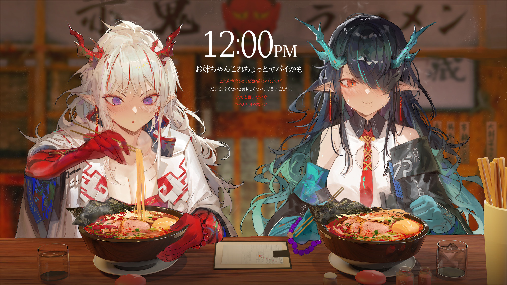

Odin Recipes

A recipe website about my favorite dishes that are easy to make.
RECIPES:
References:
https://panlasangpinoy.com/chicken-curry-pinoy-style/
https://panlasangpinoy.com/sinigang-na-baboy-with-gabi/
https://panlasangpinoy.com/egg-drop-soup/